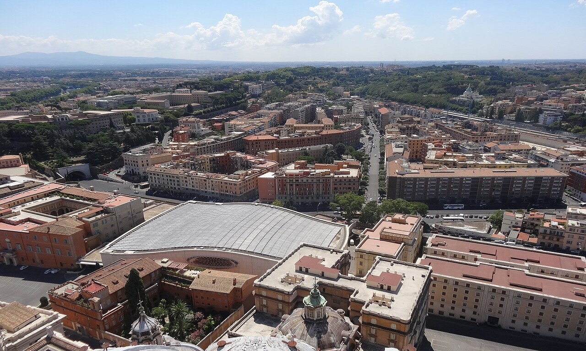
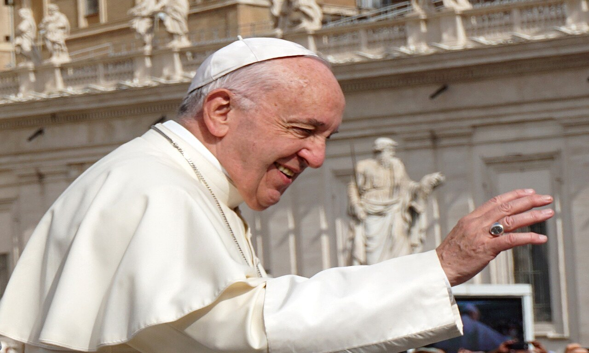

Private Papal Audience

A private papal audience is not a one-on-one meeting with the Pope. It is a private, chauffeured way to attend the Pope's free Wednesday general audience in St. Peter's Square, with only your group taking part. It includes hotel pickup and drop-off in a private vehicle, a dedicated guide who handles the tickets and security, and help getting a barrier-side spot on the popemobile route. It runs about 5 hours from a 6:00 am pickup. It is offered in six languages, and is wheelchair and stroller accessible on request. The audience tickets are always free from the Vatican, you are paying for the private service around them, not the ticket.
A private papal audience is the most comfortable way to see the Pope on a Wednesday, built for people who would rather not deal with the early start, the public transport, and the crowds on their own.
You get a car to your door, a guide who takes care of everything, and a spot chosen to give you the best chance of seeing the Pope up close.
To be clear on what it is, this is a private version of the normal general audience, not a special private meeting with the Pope.
If you just want to attend for free and organise it yourself, our full papal audience guide walks you through the free tickets, the schedule, and what happens. This guide is for the private, door-to-door option.
📋 In This Guide
🎟 Top Vatican Tickets & Tours
What is a Private Papal Audience
The Pope holds a general audience on most Wednesday mornings, and anyone can attend with a free ticket. A private papal audience is simply the VIP way to do it.
Instead of joining a shared group or finding your own way there, you get a private car, a private guide, and a plan built around your group alone.
The event itself is the same public audience everyone attends, held in St. Peter's Square. What you are paying for is the private service: the transport, the guide, the ticket handling, and someone who knows exactly where to stand so you get close to the popemobile.
It is worth saying again that this is not a personal audience with the Pope, which is not something sold to visitors.
What the Private Experience Includes
| <div data-vi-partner-id="P00317820" data-vi-widget-ref="W-144639bf-4f66-4cde-acfc-9d0d86fc54be"></div><script async src="https://www.viator.com/orion/partner/widget.js"></script> |
|---|
This is a 100% private tour, so only your group takes part. Here is what comes with it.
- A licensed private guide dedicated to your group for the whole morning, in English, Spanish, French, German, Italian, or Portuguese
- Door-to-door return transfers in a private, air-conditioned vehicle with a professional chauffeur, plus hotel pickup and drop-off
- Pre-reserved papal audience tickets, booked and collected in advance on your behalf
- Personal help through security and guided positioning at the barriers along the popemobile route
- Runs about 5 hours, pickup is at 6:00 am, on Wednesdays when the Pope is at the Vatican
- Free cancellation up to 24 hours before the day of your visit
- Prices: Adult (14+ years): €720, Youth (11 - 13 years): €170, Child (4 - 10 years): €100, Infant (under 4 years): €30
Here is what is not included, so you can plan around it.
- Food and drinks
- Tips for your driver and guide
- Guided tours inside the Vatican Museums, Sistine Chapel, or St. Peter's Basilica

Your Morning, Step by Step
Because the audience needs an early arrival to clear security and get a good spot, the private tour starts early and runs to late morning. This is roughly how it goes.
| Time | What happens |
|---|---|
| 6:00 am | Private driver collects you from your hotel in an air-conditioned vehicle |
| 6:30 am | Arrive at St. Peter's Square and meet your private guide |
| 6:45 to 7:30 am | Your guide takes you through security before the tour buses arrive |
| 7:30 to 8:30 am | Get positioned at the popemobile barriers, with commentary on the Vatican and the ceremony while you wait |
| 9:00 to 11:00 am | The audience: the popemobile up close, readings in several languages, the teaching, and the Apostolic Blessing |
| 11:00 am | Meet your chauffeur for the ride back, or stay on to explore St. Peter's Basilica yourself |
Guided vs Private Papal Audience
Both options handle the free tickets and get you a good seat, so the choice comes down to comfort, group size, and budget.
The guided experience is the small-group option covered on our papal audience guide; the private tour is this one.
| Guided Experience | Private Papal Audience | |
|---|---|---|
| Group | Small group, up to 20 | Your group only |
| Transport | None, you meet on site | Private vehicle, hotel pickup and drop-off |
| Duration | About 3.5 hours | About 5 hours |
| Languages | English | English and five more |
| Wheelchair accessible | No | Yes, on request |
| Price | From €38 per adult | From €720, it varies by size |
| Best for | Solo travellers, couples, and budgets | Families, VIP comfort, and accessibility |
The guided experience is the affordable way to attend with expert help, while the private tour adds the car, the door-to-door service, and the flexibility that suits families and anyone who needs a gentler pace.
Who the Private Papal Audience is Best for
The private option is not for everyone, but it is a strong fit in a few cases.
- Families with young children. A private car and a flexible pace beat dragging a stroller onto crowded public transport before dawn.
- Older travellers or anyone with limited mobility. No rushing to keep up with a big group, and step-free help can be arranged.
- Anyone who values comfort. If a smooth, sorted morning matters more than the price, this removes every bit of the hassle.
If you are happy in a group and want to keep the cost down, the small-group guided experience is the better value.
Accessibility and Special Seating
Two groups get extra attention on the private tour.
Wheelchair users and travellers with limited mobility
Unlike shared walking groups that move quickly through the crowd, the private format goes at your pace. A wheelchair-accessible vehicle and an on-site wheelchair can be arranged at booking, for around a €50 supplement, to give step-free help across the square's cobbles. Request this in advance.
Newlyweds (sposi novelli)
If you married in a Catholic church within the last two months, you can sit in the special newlyweds' section near the main stage. You need to wear your wedding clothes and bring your official Catholic marriage certificate. Your private guide can check your documents beforehand and take you to the right Vatican officers to reach the reserved area.
Schedule, Dress Code, and Rules
A few essentials to know before you book.
- Wednesdays only - The tour runs on Wednesdays when the Pope is at the Vatican. For the full schedule, including summer gaps, see our papal audience guide.
- Security still applies - Even arriving by private car, everyone passes through airport-style metal detectors. Large luggage, sharp objects, and glass are not allowed.
- Dress code is enforced - Shoulders and knees must be covered, for men and women. See the Vatican dress code guide.
- Bring items to be blessed - The final Apostolic Blessing covers any rosaries, crucifixes, or keepsakes you have with you.
- Weather - The square, which you can read about in our St. Peter's Square guide, has no shade, and summer mornings get very hot. In winter, heavy rain, or extreme heat, the audience may move indoors to the Paul VI Audience Hall, where space is limited, and your guide makes sure you get in early enough for a seat.
Frequently Asked Questions
Is a private papal audience a personal meeting with the Pope?
No. It is a private, chauffeured way to attend the normal public Wednesday audience with your own guide and group. A one-on-one audience with the Pope is not something sold to visitors.
Are the papal audience tickets free?
Yes, the Vatican always issues audience tickets free of charge. On the private tour you are paying for the car, the guide, the ticket handling, and the seating help, not for the ticket itself.
Is the private papal audience wheelchair accessible?
Yes. Unlike the shared group tours, the private option is wheelchair and stroller accessible. A wheelchair-accessible vehicle and an on-site wheelchair can be arranged at booking for about a €50 supplement.
What day is the private papal audience held?
A private papal audience is held only on Wednesdays, when the Pope is at the Vatican. There is no audience on some summer dates or when the Pope is travelling, so check before booking.
Related Vatican Visitor Guides